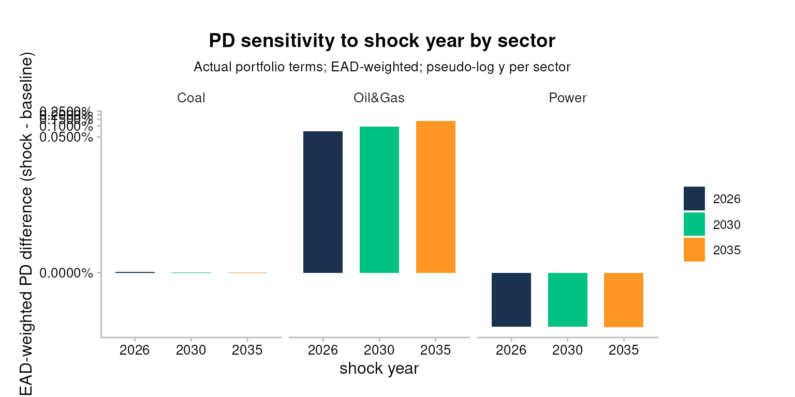
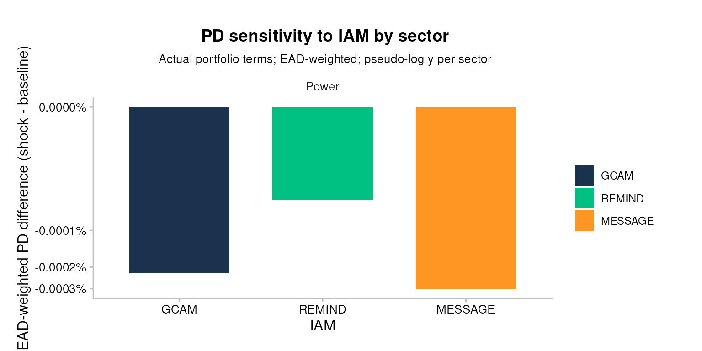
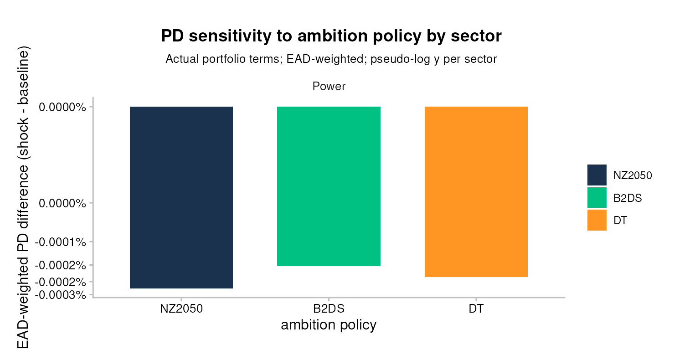

Bank workflow 3: Sensitivity analysis (bank-impact view)
Source:vignettes/bank_3_sensitivity-analysis.Rmd
bank_3_sensitivity-analysis.RmdSetup
This vignette uses the bundled testdata to demonstrate sensitivity analysis in three dimensions (shock year, IAM, ambition policy), each read through a bank-impact lens: actual portfolio terms, EAD-weighted sector aggregation, and an integrated expected-loss bps callout at the end.
Input data — where your data goes. TRISK needs five inputs: four that describe the world — assets, scenarios, NGFS carbon price and financial features — plus your portfolio. The main portfolio file is
portfolio_ids(matched bycompany_id);portfolio_namesandportfolio_countriesare options. This workflow uses theportfolio_ids_internal_pdvariant (the same file plus aninternal_pdcolumn). The CSVs loaded below are placeholders (bundled samples) — replace them with your own files. See Inputs and outputs forsetup_trisk_inputs()and thetrisk_inputs/folder convention.
Where your portfolio enters the sensitivity
analysis. The sweep itself varies scenario parameters,
but it is anchored to your portfolio: the
portfolio_ids_internal_pd file is read below, validated for
internal_pd, and reduced to portfolio_terms
(company_id, term,
exposure_value_usd). Those loan terms and exposures are
what turn each parameter run into a bank-specific, EAD-weighted result —
so swapping in your own portfolio_ids (with
internal_pd) is what makes every chart below reflect
your book.
assets_testdata <- read.csv(system.file("testdata", "assets_testdata.csv", package = "trisk.model"))
scenarios_testdata <- read.csv(system.file("testdata", "scenarios_testdata.csv", package = "trisk.model"))
financial_features_testdata <- read.csv(system.file("testdata", "financial_features_testdata.csv", package = "trisk.model"))
ngfs_carbon_price_testdata <- read.csv(system.file("testdata", "ngfs_carbon_price_testdata.csv", package = "trisk.model"))
portfolio_ids_internal_pd <- read.csv(system.file("testdata", "portfolio_ids_internal_pd_testdata.csv",
package = "trisk.analysis"))
# TRISK echoes company_id back as a character key; read.csv infers integers for
# the bundled portfolio file. Coerce once here so every downstream join on
# `company_id` matches on type.
portfolio_ids_internal_pd$company_id <- as.character(portfolio_ids_internal_pd$company_id)
stopifnot(
"Portfolio file must include an `internal_pd` column per exposure." =
"internal_pd" %in% colnames(portfolio_ids_internal_pd),
"`internal_pd` values must be numeric in [0, 1]." =
is.numeric(portfolio_ids_internal_pd$internal_pd) &&
all(portfolio_ids_internal_pd$internal_pd >= 0 &
portfolio_ids_internal_pd$internal_pd <= 1, na.rm = TRUE)
)
portfolio_terms <- portfolio_ids_internal_pd[, c("company_id", "term", "exposure_value_usd")]Why sensitivity
Climate stress-testing carries three layers of uncertainty a bank
reader cares about: when the shock arrives
(shock_year), whose model of the
transition you trust (the IAM), and how ambitious the
target scenario is. This vignette sweeps each one and reads the result
as a change in the bank’s portfolio risk picture, not as an abstract
model output.
Base run
run_params_base <- list(
list(
scenario_geography = "Global",
baseline_scenario = "NGFS2023GCAM_CP",
target_scenario = "NGFS2023GCAM_NZ2050",
shock_year = 2030
)
)
sa_base <- run_trisk_sa(
assets_data = assets_testdata,
scenarios_data = scenarios_testdata,
financial_data = financial_features_testdata,
carbon_data = ngfs_carbon_price_testdata,
run_params = run_params_base
)
#> [1] "Starting the execution of 1 total runs"
#> -- Retyping Dataframes.
#> -- Processing Assets and Scenarios.
#> -- Transforming to Trisk model input.
#> -- Calculating baseline, target, and shock trajectories.
#> -- Applying zero-trajectory logic to production trajectories.
#> -- Calculating net profits.
#> Joining with `by = join_by(asset_id, company_id, sector, technology)`
#> -- Calculating market risk.
#> -- Calculating credit risk.
#> [1] "Done 1 / 1 total runs"
#> [1] "All runs completed."
knitr::kable(head(sa_base$pd[, c("run_id", "company_id", "sector", "term",
"pd_baseline", "pd_shock")]))| run_id | company_id | sector | term | pd_baseline | pd_shock |
|---|---|---|---|---|---|
| e78abf43-6840-4fc6-9a38-f6b43eeeb8c0 | 101 | Oil&Gas | 1 | 0.0000000 | 0.0000000 |
| e78abf43-6840-4fc6-9a38-f6b43eeeb8c0 | 101 | Oil&Gas | 2 | 0.0000000 | 0.0000214 |
| e78abf43-6840-4fc6-9a38-f6b43eeeb8c0 | 101 | Oil&Gas | 3 | 0.0000011 | 0.0004647 |
| e78abf43-6840-4fc6-9a38-f6b43eeeb8c0 | 101 | Oil&Gas | 4 | 0.0000237 | 0.0022474 |
| e78abf43-6840-4fc6-9a38-f6b43eeeb8c0 | 101 | Oil&Gas | 5 | 0.0001502 | 0.0059057 |
| e78abf43-6840-4fc6-9a38-f6b43eeeb8c0 | 101 | Oil&Gas | 6 | 0.0005218 | 0.0113956 |
Convention: actual portfolio terms, EAD-weighted
Every plot below evaluates PD at each firm’s contractual loan term
(from portfolio_terms) and aggregates sector-level numbers
as EAD-weighted means. This matches the convention used by the
integration pipeline (pipeline_crispy_pd_integration_bars
and siblings) and means the PDs and EL deltas read here are directly
comparable to those in pd-el-integration
— no per-section translation needed.
Caveat. If a portfolio row has a contractual term beyond TRISK’s Merton grid (sized to the analysis horizon since the ADO 1943 term-grid fix in
trisk.model), the term join silently drops it. The helper below emits a warning naming the dropped(company_id, term)pairs so the omission is visible.
Plot helpers
These three functions are defined inline in the vignette (not
exported from the package). Each one takes the long-format PD output of
run_trisk_sa(), attaches the bank’s contractual portfolio
terms, and produces a comparison plot of PD difference
(pd_shock - pd_baseline) per variant.
attach_portfolio_term <- function(sa_pd, portfolio_terms) {
joined <- sa_pd %>%
dplyr::inner_join(portfolio_terms, by = c("company_id", "term"))
present <- dplyr::distinct(joined[, c("company_id", "term")])
n_dropped <- nrow(portfolio_terms) - nrow(present)
if (n_dropped > 0) {
dropped <- dplyr::anti_join(portfolio_terms, present, by = c("company_id", "term"))
warning("Dropped ", n_dropped, " portfolio row(s) whose term is outside the Merton grid: ",
paste(dropped$company_id, dropped$term, sep = "/term=", collapse = ", "),
call. = FALSE)
}
joined
}
label_by_variant <- function(sa_result, label_fn) {
sa_result$pd %>%
dplyr::left_join(sa_result$params, by = "run_id") %>%
dplyr::mutate(variant = label_fn(.))
}
draw_pd_by_sector <- function(labelled_pd, portfolio_terms, variant_name,
palette_values = NULL) {
agg <- labelled_pd %>%
attach_portfolio_term(portfolio_terms) %>%
dplyr::mutate(pd_difference = .data$pd_shock - .data$pd_baseline) %>%
dplyr::group_by(.data$sector, .data$variant) %>%
dplyr::summarise(
pd_difference = stats::weighted.mean(.data$pd_difference,
w = .data$exposure_value_usd,
na.rm = TRUE),
.groups = "drop"
)
p <- ggplot2::ggplot(agg, ggplot2::aes(x = .data$variant,
y = .data$pd_difference,
fill = .data$variant)) +
ggplot2::geom_col(width = 0.7) +
ggplot2::facet_grid(. ~ sector, scales = "free_y") +
ggplot2::scale_y_continuous(
trans = scales::pseudo_log_trans(sigma = 1e-7),
labels = scales::percent_format(accuracy = 0.0001)
) +
TRISK_PLOT_THEME_FUNC() +
ggplot2::labs(x = variant_name, y = "EAD-weighted PD difference (shock - baseline)",
fill = variant_name,
title = paste("PD sensitivity to", variant_name, "by sector"),
subtitle = "Actual portfolio terms; EAD-weighted; pseudo-log y per sector")
if (!is.null(palette_values)) p <- p + ggplot2::scale_fill_manual(values = palette_values)
p
}
draw_pd_by_exposure <- function(labelled_pd, portfolio_terms, variant_name,
palette_values = NULL) {
agg <- labelled_pd %>%
attach_portfolio_term(portfolio_terms) %>%
dplyr::mutate(firm = paste(.data$company_id, .data$sector, sep = "/"),
pd_difference = .data$pd_shock - .data$pd_baseline)
p <- ggplot2::ggplot(agg, ggplot2::aes(x = .data$firm,
y = .data$pd_difference,
fill = .data$variant)) +
ggplot2::geom_col(position = ggplot2::position_dodge(width = 0.8), width = 0.7) +
ggplot2::facet_grid(. ~ sector, scales = "free", space = "free_x") +
ggplot2::scale_y_continuous(
trans = scales::pseudo_log_trans(sigma = 1e-7),
labels = scales::percent_format(accuracy = 0.0001)
) +
TRISK_PLOT_THEME_FUNC() +
ggplot2::theme(axis.text.x = ggplot2::element_text(angle = 45, hjust = 1)) +
ggplot2::labs(x = "Firm / sector", y = "PD difference (shock - baseline)",
fill = variant_name,
title = paste("Per-exposure PD sensitivity to", variant_name),
subtitle = "Actual portfolio terms; pseudo-log y per sector")
if (!is.null(palette_values)) p <- p + ggplot2::scale_fill_manual(values = palette_values)
p
}A small palette shared across the three dimension sections so the same variant index gets the same colour everywhere:
TRAJ_PALETTE <- c("#1b324f", "#00c082", "#ff9623") # matches plot_multi_trajectories()Shock year
What happens to portfolio PD when the policy shock hits earlier or
later? This section sweeps shock_year across 2026 / 2030 /
2035, holding the scenario pair fixed at NGFS2023GCAM CP vs NZ2050.
run_params_shockyear <- list(
list(scenario_geography = "Global",
baseline_scenario = "NGFS2023GCAM_CP",
target_scenario = "NGFS2023GCAM_NZ2050",
shock_year = 2026),
list(scenario_geography = "Global",
baseline_scenario = "NGFS2023GCAM_CP",
target_scenario = "NGFS2023GCAM_NZ2050",
shock_year = 2030),
list(scenario_geography = "Global",
baseline_scenario = "NGFS2023GCAM_CP",
target_scenario = "NGFS2023GCAM_NZ2050",
shock_year = 2035)
)
sa_shockyear <- run_trisk_sa(
assets_data = assets_testdata,
scenarios_data = scenarios_testdata,
financial_data = financial_features_testdata,
carbon_data = ngfs_carbon_price_testdata,
run_params = run_params_shockyear
)
#> [1] "Starting the execution of 3 total runs"
#> -- Retyping Dataframes.
#> -- Processing Assets and Scenarios.
#> -- Transforming to Trisk model input.
#> -- Calculating baseline, target, and shock trajectories.
#> -- Applying zero-trajectory logic to production trajectories.
#> -- Calculating net profits.
#> Joining with `by = join_by(asset_id, company_id, sector, technology)`
#> -- Calculating market risk.
#> -- Calculating credit risk.
#> [1] "Done 1 / 3 total runs"
#> -- Retyping Dataframes.
#> -- Processing Assets and Scenarios.
#> -- Transforming to Trisk model input.
#> -- Calculating baseline, target, and shock trajectories.
#> -- Applying zero-trajectory logic to production trajectories.
#> -- Calculating net profits.
#> Joining with `by = join_by(asset_id, company_id, sector, technology)`
#> -- Calculating market risk.
#> -- Calculating credit risk.
#> [1] "Done 2 / 3 total runs"
#> -- Retyping Dataframes.
#> -- Processing Assets and Scenarios.
#> -- Transforming to Trisk model input.
#> -- Calculating baseline, target, and shock trajectories.
#> -- Applying zero-trajectory logic to production trajectories.
#> -- Calculating net profits.
#> Joining with `by = join_by(asset_id, company_id, sector, technology)`
#> -- Calculating market risk.
#> -- Calculating credit risk.
#> [1] "Done 3 / 3 total runs"
#> [1] "All runs completed."
pd_shockyear <- label_by_variant(sa_shockyear,
function(d) factor(d$shock_year, levels = c(2026, 2030, 2035)))
draw_pd_by_sector(pd_shockyear, portfolio_terms, "shock year",
palette_values = stats::setNames(TRAJ_PALETTE,
c("2026", "2030", "2035")))

IAM (integrated assessment model)
Same transition story, different model: NGFS2023 publishes its CP and NZ2050 scenarios under three IAMs — GCAM, REMIND, and MESSAGE. Bank readers who pick one IAM should know how their numbers move under the other two.
Scope of the bundled IAM/ambition data. NGFS2023 only publishes the REMIND and MESSAGE models — and the B2DS / DT ambition variants used in the next section — for the Power sector, spanning 2023–2050. The legacy multi-sector
NGFS2023GCAM_*scenarios used in the sections above run 2022–2100 across Coal, Oil & Gas, and Power. Because TRISK derives its analysis window from the scenario’s own year range, we scope the portfolio to that window before running these two sections — keeping the cross-variant comparison apples-to-apples on the bank’s power exposure.
# This filter is YEAR scoping only: the scenario-derived analysis window starts
# at 2023 for these variants, and the model asserts every asset's production_year
# falls inside that window (it errors rather than trimming), so we drop the lone
# 2022 rows. It does NOT do sector scoping — assets_power still holds Coal and
# Oil & Gas rows. The Power-only restriction happens automatically downstream:
# the model inner-joins assets to the scenario technologies, which are Power-only
# for these variants, so the other sectors drop out without error.
assets_power <- assets_testdata[assets_testdata$production_year >= 2023, ]
# Scope the term table to the portfolio's Power exposure so the term-join
# warning flags only genuine term-grid drops, not the Coal / Oil & Gas firms
# that these Power-only scenarios legitimately exclude.
power_ids <- portfolio_ids_internal_pd$company_id[portfolio_ids_internal_pd$sector == "Power"]
portfolio_terms_power <- portfolio_terms[portfolio_terms$company_id %in% power_ids, ]
run_params_iam <- list(
list(scenario_geography = "Global",
baseline_scenario = "NGFS2023_GCAM_CP",
target_scenario = "NGFS2023_GCAM_NZ2050",
shock_year = 2030),
list(scenario_geography = "Global",
baseline_scenario = "NGFS2023_REMIND_CP",
target_scenario = "NGFS2023_REMIND_NZ2050",
shock_year = 2030),
list(scenario_geography = "Global",
baseline_scenario = "NGFS2023_MESSAGE_CP",
target_scenario = "NGFS2023_MESSAGE_NZ2050",
shock_year = 2030)
)
sa_iam <- run_trisk_sa(
assets_data = assets_power,
scenarios_data = scenarios_testdata,
financial_data = financial_features_testdata,
carbon_data = ngfs_carbon_price_testdata,
run_params = run_params_iam
)
#> [1] "Starting the execution of 3 total runs"
#> -- Retyping Dataframes.
#> -- Processing Assets and Scenarios.
#> -- Transforming to Trisk model input.
#> -- Calculating baseline, target, and shock trajectories.
#> -- Applying zero-trajectory logic to production trajectories.
#> -- Calculating net profits.
#> Joining with `by = join_by(asset_id, company_id, sector, technology)`
#> -- Calculating market risk.
#> -- Calculating credit risk.
#> [1] "Done 1 / 3 total runs"
#> -- Retyping Dataframes.
#> -- Processing Assets and Scenarios.
#> -- Transforming to Trisk model input.
#> -- Calculating baseline, target, and shock trajectories.
#> -- Applying zero-trajectory logic to production trajectories.
#> -- Calculating net profits.
#> Joining with `by = join_by(asset_id, company_id, sector, technology)`
#> -- Calculating market risk.
#> -- Calculating credit risk.
#> [1] "Done 2 / 3 total runs"
#> -- Retyping Dataframes.
#> -- Processing Assets and Scenarios.
#> -- Transforming to Trisk model input.
#> -- Calculating baseline, target, and shock trajectories.
#> -- Applying zero-trajectory logic to production trajectories.
#> -- Calculating net profits.
#> Joining with `by = join_by(asset_id, company_id, sector, technology)`
#> -- Calculating market risk.
#> -- Calculating credit risk.
#> [1] "Done 3 / 3 total runs"
#> [1] "All runs completed."
pd_iam <- label_by_variant(sa_iam, function(d) {
iam <- sub("^NGFS2023_([A-Z]+)_.*", "\\1", d$baseline_scenario)
factor(iam, levels = c("GCAM", "REMIND", "MESSAGE"))
})
draw_pd_by_sector(pd_iam, portfolio_terms_power, "IAM",
palette_values = stats::setNames(TRAJ_PALETTE,
c("GCAM", "REMIND", "MESSAGE")))
Ambition policy
Same IAM (GCAM), different target stringency: how does the PD signal change across Net Zero 2050, Below 2°C, and Delayed Transition, each measured against Current Policies as the baseline?
run_params_ambition <- list(
list(scenario_geography = "Global",
baseline_scenario = "NGFS2023_GCAM_CP",
target_scenario = "NGFS2023_GCAM_NZ2050",
shock_year = 2030),
list(scenario_geography = "Global",
baseline_scenario = "NGFS2023_GCAM_CP",
target_scenario = "NGFS2023_GCAM_B2DS",
shock_year = 2030),
list(scenario_geography = "Global",
baseline_scenario = "NGFS2023_GCAM_CP",
target_scenario = "NGFS2023_GCAM_DT",
shock_year = 2030)
)
sa_ambition <- run_trisk_sa(
assets_data = assets_power,
scenarios_data = scenarios_testdata,
financial_data = financial_features_testdata,
carbon_data = ngfs_carbon_price_testdata,
run_params = run_params_ambition
)
#> [1] "Starting the execution of 3 total runs"
#> -- Retyping Dataframes.
#> -- Processing Assets and Scenarios.
#> -- Transforming to Trisk model input.
#> -- Calculating baseline, target, and shock trajectories.
#> -- Applying zero-trajectory logic to production trajectories.
#> -- Calculating net profits.
#> Joining with `by = join_by(asset_id, company_id, sector, technology)`
#> -- Calculating market risk.
#> -- Calculating credit risk.
#> [1] "Done 1 / 3 total runs"
#> -- Retyping Dataframes.
#> -- Processing Assets and Scenarios.
#> -- Transforming to Trisk model input.
#> -- Calculating baseline, target, and shock trajectories.
#> -- Applying zero-trajectory logic to production trajectories.
#> -- Calculating net profits.
#> Joining with `by = join_by(asset_id, company_id, sector, technology)`
#> -- Calculating market risk.
#> -- Calculating credit risk.
#> [1] "Done 2 / 3 total runs"
#> -- Retyping Dataframes.
#> -- Processing Assets and Scenarios.
#> -- Transforming to Trisk model input.
#> -- Calculating baseline, target, and shock trajectories.
#> -- Applying zero-trajectory logic to production trajectories.
#> -- Calculating net profits.
#> Joining with `by = join_by(asset_id, company_id, sector, technology)`
#> -- Calculating market risk.
#> -- Calculating credit risk.
#> [1] "Done 3 / 3 total runs"
#> [1] "All runs completed."
pd_ambition <- label_by_variant(sa_ambition, function(d) {
ambition <- sub("^NGFS2023_GCAM_(.*)$", "\\1", d$target_scenario)
factor(ambition, levels = c("NZ2050", "B2DS", "DT"))
})
draw_pd_by_sector(pd_ambition, portfolio_terms_power, "ambition policy",
palette_values = stats::setNames(TRAJ_PALETTE,
c("NZ2050", "B2DS", "DT")))
What this means for the bank
The previous sections show how raw PD shifts under different design
choices. The bank-impact question is: how does that translate into
expected-loss basis points on the actual portfolio? We pick one variant
(shock_year = 2030, NGFS2023GCAM CP vs NZ2050, Global — the
base run) and walk it through the integration pipeline, ending with the
EL bps KPI used elsewhere in the package.
analysis_data <- run_trisk_on_portfolio(
assets_data = assets_testdata,
scenarios_data = scenarios_testdata,
financial_data = financial_features_testdata,
carbon_data = ngfs_carbon_price_testdata,
portfolio_data = portfolio_ids_internal_pd,
baseline_scenario = "NGFS2023GCAM_CP",
target_scenario = "NGFS2023GCAM_NZ2050"
)
#> -- Start Trisk-- Retyping Dataframes.
#> -- Processing Assets and Scenarios.
#> -- Transforming to Trisk model input.
#> -- Calculating baseline, target, and shock trajectories.
#> -- Applying zero-trajectory logic to production trajectories.
#> -- Calculating net profits.
#> Joining with `by = join_by(asset_id, company_id, sector, technology)`
#> -- Calculating market risk.
#> -- Calculating credit risk.
analysis_data_el <- compute_analysis_metrics(analysis_data)
internal_pd_lookup <- portfolio_ids_internal_pd[, c("company_id", "internal_pd")]
internal_el_lookup <- merge(
analysis_data_el[, c("company_id", "exposure_value_usd", "loss_given_default")],
internal_pd_lookup,
by = "company_id"
)
internal_el_lookup$internal_el <-
internal_el_lookup$exposure_value_usd *
internal_el_lookup$loss_given_default *
internal_el_lookup$internal_pd
result_el <- integrate_el(analysis_data_el,
internal_el = internal_el_lookup[, c("company_id", "internal_el")])
pipeline_crispy_el_kpi_table(result_el$aggregate)| Total Exposure (USD) | Total Internal EL | Total Adjusted EL | EL Adjustment | Adjusted EL (bps) |
|---|---|---|---|---|
| 21.06M | 318.1K | 527.8K | 209.7K | 250.6 bps |
Read the EL bps delta as the bank-impact summary of this one variant.
The sensitivity sections above tell you how that number would move if
you chose a different shock year, IAM, or ambition tier. For deeper plot
references and the full methodology, see pd-el-integration.
See also
-
getting-started— the reading-path entry point. -
simple-portfolio-analysis— how the underlying TRISK runs that feed this analysis are produced. -
pd-el-integration— the full PD/EL integration methodology and the EL bps KPI surfaced in the closing section.